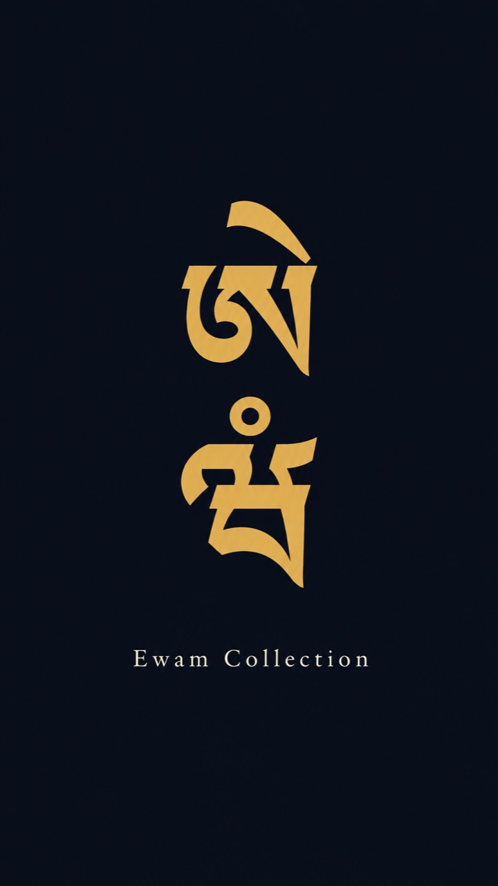

Tap or press Enter
Introduction
Ewam Collection
E Wam
Prayer Collection
×
TIB
PHO
ENG
Donate
?
EN
ཨེ
E
Index
ཝཾ
Wam
Prayers
×
Downloading both collections for offline reading…
Loading the collections…
Tap anywhere to close
Introduction
About the Text
Read more
How to Use
Read more
Choose a collection
E Wam
Prayer Collection
Read the full introduction
How to Use
Proceed to the Text